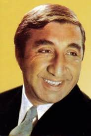

Մհեր Մկրտչյան
Կենսագրություն
Մհեր Մկրտչյանը ծնվել է 1930 թվականին Գյումրիում։ Հայրը՝ Մուշեղ Մկրտչյանը, ծագումով մշեցի էր, իսկ մայրը՝ Սանամ Մկրտչյանը, վանեցի։ Մհերը մանկուց հետաքրքրված էր արվեստով․ սովորել է Գյումրիի նկարչական և երաժշտական դպրոցներում և մասնակցել է թատերական ինքնագործ խմբակին։
1945-1946 թվականներին սովորել է Մռավյանի անվան թատրոնին կից ստուդիայում։ 1947 թվականին ընդգրկվել է նույն թատրոնի հիմնական կազմում, որտեղ խաղացել է բազմաթիվ դերեր՝ դրսևորելով ակնհայտ տաղանդ։
1951-1956 թվականներին սովորել է Երևանի պետական գեղարվեստա-թատերական ինստիտուտում՝ Վաղարշ Վաղարշյանի ղեկավարությամբ։ 1956 թվականին տեղափոխվել է Գաբրիել Սունդուկյանի անվան ազգային ակադեմիական թատրոն, որի բեմում կերտել է անմոռանալի դերեր։
Մկրտչյանի կինոյում դեբյուտը տեղի ունեցավ 1959 թվականին՝ «01-99» ֆիլմում, որտեղ նա աչքի ընկավ տպավորիչ կերպարով։ Նա հաջողությամբ մարմնավորել է ինչպես դրամատիկական, այնպես էլ կատակերգական հերոսներ։ Նրա հիանալի դերերից են՝ Արսեն («Նվագախմբի տղաները»), Գասպար («Եռանկյունի»), Իշխան («Մենք ենք, մեր սարերը»), Հայրիկ («Հայրիկ»), Ամիրո («Նահապետ»), Գրիգոր աղա («Կտոր մը երկինք») և Իսա («Խաթաբալա»)։
Դրամատիկական հզոր խաղին զուգահեռ, Մկրտչյանը սիրվել է նաև իր հումորային դերերով՝ «Կովկասի գերուհին», «Այբոլիտ-66», «Միմինո», «Ալի բաբան և քառասուն ավազակները», «Ունայնություն ունայնությանց» ֆիլմերում։ Նրա դերակատարումները պարգևատրվել են բարձր պետական մրցանակներով։
Մհեր Մկրտչյանը մահացել է 1993 թվականին։ Գյումրիում գործում է Մհեր Մկրտչյանի թանգարանը, որտեղ ցուցադրվում են նրա կյանքին, ստեղծագործությանը և անձնական իրերին վերաբերող նյութեր։
Նրա ընտանիքը մեծ դեր է ունեցել նրա կյանքում։ Հայրը՝ Մուշեղ Մկրտչյան (1910-1961), եղել է հաշվառու, իսկ մայրը՝ Սանամ Մկրտչյան (1911-1970), աշխատել է ճաշարանում։ Եղբայրը՝ Ալբերտ Մկրտչյան (1937-2018), հայտնի ռեժիսոր ու սցենարիստ էր։ Ուներ նաև երկու քույր՝ Կլարա (1934-2003) և Ռուզաննա (ծնվ. 1943)։
Մկրտչյանի առաջին կինը եղել է Քնարան՝ նրա համակուրսեցին։ Երկրորդ կինը՝ Դոնարա Մկրտչյանը (1941-2011), դերասանուհի էր, որը խաղացել է «Կովկասի գերուհին» ֆիլմում։ Նա տառապել է ծանր հոգեկան հիվանդությամբ և կյանքի վերջին 25 տարիներն անցկացրել է Սևանի հոգեբուժական հիվանդանոցում։ Նրանք ունեցել են դուստր՝ Նունե (Նինա) (1959-1998), որը զոհվել է Արգենտինայում՝ վիրահատությունից հետո առաջացած բարդություններից, և որդի՝ Վազգեն (Վահագ) (1972-2003), որը տառապել է մորից ժառանգած հոգեկան հիվանդությամբ։ Դուստրը ունեցել է դուստր՝ Գայանե (Իռեն), որը այժմ ապրում է Արգենտինայում։
Մհեր Մկրտչյանի երրորդ կինը եղել է Թամարը՝ դերասանուհի, գրող Հրաչյա Հովհաննիսյանի դուստրը։
Մհեր Մկրտչյանն ունեցել է երկու անուն՝ Մհեր և Ֆրունզ։ «Ֆրունզ» անունը տրվել է ի պատիվ Միխայիլ Ֆրունզեի, և այդ անունով են նրան հիշում շատերը։ Դերասանը տարբեր փաստաթղթերում ստորագրել է տարբեր ձևերով՝ երբեմն որպես Ֆրունզ Մկրտչյան, երբեմն՝ Մհեր Մկրտչյան։ Երիտասարդ տարիներին կրել է «Քիթ» մականունը։